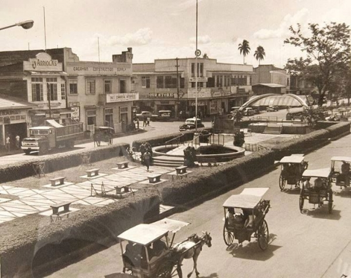

CAGAYAN DE ORO AND ITS SURROUNDING were occupied by people around 350 AD. Signs of ancient habitation were discovered in 1970 by field researchers of the National Museum. The researchers were exploring Huluga, a place eight kilometers south of the present Cagayan de Oro City.
Huluga is a promontory(A promontory is "a high ridge of land or rock putting out into a body of water; a headland" -- The American Heritage Dictionary, Third Edition.) with two main sections: a set of caves and an Open Site . The Open Site appears to be the village of the original people of Cagayan de Oro.
Inside the cave were skeletons, pots, potsherds, tools, possibly Indian glass beads, Chinese pot fragments, and vestiges of possibly Annamese and Thai wares -- indications of overseas trading. The Open Site yielded potsherds, Chinese celadon sherds, and obsidian flakes.
Researchers sent a skull fragment to Dr. Jeffrey Bada of the external site Scripps Institution of Oceanography in La Jolla, California, where it was subjected to acid racemization, a dating technique. Bada then wrote a letter to anthropologist Dr. Linda Burton of Xavier University, indicating that the sample came from 350 AD,*** the Late Neolithic Period.
In 1622, two Augustinian Recollect missionaries first came to Huluga, then called Himologan. Here they met a mixed stock of Bukidnons and Visayas who lived in a settlement perched on a cliff, overlooking a river. The men had massive tattoos, like those of the Visayan pintados, and the women wore intricate jewelry, some made of gold.
The priests were Fray Juan de San Nicolas and Fray Francisco de la Madre de Dios. According to their journals, the natives were polytheistic animists, not Muslims. But they paid tributes to Sultan Kudarat through his emissaries.
Spanish documents in 1500s already referred to the area around Himologan as Cagayan. On January 25, 1571, the Spanish government granted this area, including what is now Northern Mindanao, as an encomienda to Juan Griego. There is also a Cagayan in Luzon and another in Sulu. What is the origin of this name?
According to Father Miguel Bernad, S.J. of Xavier University, "cagayan" comes from the Malayo-Polynesian word ag, which means "water". Ag is present in words like agus, agusan, and kagay. Agus means "flowing water", and agusan "place of flowing water". Kagay means "river" and kagayan is "place with a river".
But according to Dr. Lawrence A Reid, Professor Emeritus, Department of Linguistics, University of Hawai`i, "cagayan" comes from an ancient Philippine word *kaRayan, which means "river". In an email sent to the Ancient Baybayin Scripts Network of Yahoogroups, Reid explained, "The evidence for the Proto-Philippine word reconstructable for river, *kaRayan, comes from the Ilokano karayan, Central Agta kahayan, Itawis kayan, etc.. Note that in all the languages that have a reflex of this form, it simply means 'river'. It is not a morphologically complex form. There is no language that reflects a form kagay. Nor is there any evidence that either the final -an was a suffix, or for that matter that the initial ka- was a prefix . "
In 1626, a 26-year old Augustinian Recollect friar arrived in Cagayan. His name was Fray Agustin de San Pedro, a Portuguese. Before his priesthood, he studied mathematics, architecture, gunnery, and military strategy at the University of Salamanca.
Fray Agustin persuaded the leader of Himologan, Datu Salangsang, to transfer his settlement down river, to the area of today's Gaston Park and San Agustin Cathedral. Here, Fray Agustin built a church of native materials. Inside, he baptized Datu Salangsang and his wife, and later his people.
In response to the conversion, Sultan Kudarat sent a fleet of warriors to drive away the Spanish missionaries and to regain the lost tributes.
Kudarat's attacks prompted Fray Agustin to build a wooden fortress and watchtower in Cagayan to protect Salangsang's people. He called the fortress Fuerza Real de San Jose, and it occupied an area now filled with Gaston Park and San Agustin Cathedral. Fray Agustin's defense of Cagayan earned him the title "El Padre Capitan".
The fortress was rebuilt with stones in 1730. But Lt. Col. Jose Carvallo, the Spanish politico-military governor of Misamis, demolished it in 1875 and used the stones to pave the streets of the town.
The Recoletos made Cagayan their mission center in 1674. But only on August 28, 1780 did they declare San Agustin the patron saint of Cagayan.
In 1845, Fray Simon Loscos de Santa Catalina reconstructed the church, using marine stones from China. It had protruding buttresses and a single belfry. Inside were a magnificent altar and sanctuary with carved wooden niches and paintings.
This church was destroyed during the Japanese bombing of Cagayan in 1945, exactly a hundred years later.
In 1818, the Manila Spanish divided Mindanao into politico-military districts, one of which was the Segundo Distrito de Misamis, the largest district in Mindanao. This area was composed of today's Misamis Oriental, Misamis Occidental, Camiguin, Bukidnon, Lanao, Zamboanga del Norte, and the northern part of Cotabato.
The capital was the town of Misamis, today called Ozamis City, where a fort and garrison bigger than those in Cagayan were constructed.
On February 27, 1872, the Spanish Governor General Carlos Maria de la Torre issued a decree declaring Cagayan the permanent capital of Segundo Distrito de Misamis. All Spanish politico-military governors of Misamis, who were all lieutenant colonels, lived at the Casa Real de Cagayan, built in 1831, the site of today's city hall of Cagayan de Oro. During this era, the name of the town was "Cagayan de Misamis".
In 1888, the Recoletos erected a wooden cross -- "Santa Cruz" -- outside the San Agustin Church. It still stands today.
THE KATIPUNAN REVOLT BROKE OUT in Luzon in late August 1896. A month later, on September 29, 1896, a group of Filipinos in Iligan -- who had been deported from Luzon to undergo military discipline -- received instructions from the Manila Katipunan, and consequently mutinied against the Spanish soldiers. They raided the Spanish armory, then ransacked all convents and homes of Spanish peninsulares from Iligan to Cagayan de Misamis.
They proceeded to Bukidnon, where they forged an alliance with a band of natives. Then they attacked Balingasag, and raided the outpost of Gingoog on January 1897. Anger intensified when the rebels learned of Dr. Jose P. Rizal's execution. But they were subdued when the Spanish government recalled and used a gunboat from the Tercio Distrito de Surigao.
The uprising in Cagayan de Misamis is the only known Katipunan-led revolt in the whole of Mindanao.
On December 10, 1898, the United States and Spain signed the Treaty of Peace. Immediately, the Spanish governor relinquished his authority to two Filipinos elected by Aguinaldo: Jose Roa Y Casas, who was appointed first governor of Misamis; and Toribio Chavez, appointed the first Filipino mayor of Cagayan de Misamis.
On January 10-11, 1899, Cagayan de Misamis celebrated independence by organizing the so-called Fiesta Nacional. The people held a parade, played music, presented speeches and fired cannons outside the Casa Real. For the first time, Filipinos declared the Aguinaldo Republic in Mindanao and raised the Philippine Flag in this island.
On March 31, 1900, the Americans invaded Cagayan de Misamis by first bombing the flag fluttering at Macabalan wharf. Filipino resistance fighters had already organized before the attack, but retaliated only on April 7, 1900, led by Gen. Nicolas Capistrano. The fighting erupted in the town center. This was followed by the Battle of Agusan Hill, led by Capt. Vicente Roa Y Racines, who was killed with his men
On June 4, 1900, however, for the first time in the entire Philippine-American War, the Americans lost to the Filipino revolutionaries in the Battle of Makahambus Hill. Col. Apolinar Velez led the Filipino troop to victory.
The Americans won the war eventually, however. And under foreign rule, Cagayan de Misamis became the center of commerce, migration, and education in Northern Mindanao.
Several American governor generals visited the place: William Howard Taft (who became the 27th US president), William Cameron Forbessy, James F. Smith and Theodore Roosevelt, Jr. Manuel L. Quezon and Sergio Osmeña, Sr. also graced Cagayan de Misamis.
Misamis Oriental became a separate province in 1930 through Legislative Act 3777.
On May 1, 1942, the Japanese Kawamura Detachment sailed from Iloilo to Cagayan de Misamis, and implemented the "scorched earth policy". They burned most of the town, but used the major buildings as headquarters.
Guerrillas fought back, but failed to cause major damage. On October 10, 1944, American planes bombarded Cagayan de Misamis to drive out the Japanese, eventually liberating the place on May 10, 1945.
Starting 1946, Misamis Congressman Pedro S. Baculio lobbied in the Philippine Congress so that Cagayan de Misamis, which was reeling from the ashes of war, would be declared a city. On December 17, 1949, the new Congressman Emmanuel Pelaez introduced House Bill No. 54, entitled "An Act Creating the City of Cagayan de Oro". President Elpidio Quirino signed the city charter at 11:30 am, June 15, 1950.
Pelaez appended "de Oro" to "Cagayan" in recognition of gold mining in the hinterland barrios known to Spanish explorers in 1500s.
The first appointed mayor of Cagayan de Oro was Max Y. Suniel, followed by Justiniano R. Borja in 1954. Borja was elected as mayor again in 1955, and was repeatedly elected and appointed until he died on October 3, 1964. He was called the "Arsenio Lacson of Cagayan de Oro", being responsible for the phenomenal growth of the city since 1959, when he opened the Cogon Market.
On June 29, 1951, Pope Pius XII created the first Catholic archbishopric in Mindanao, when he elevated the Diocese of Cagayan into an archdiocese.
Santiago T. G. Hayes, S.J. was the first archbishop. Hayes founded Ateneo de Cagayan on June 7, 1933. The school was renamed Xavier University on March 22, 1958. It was the first Mindanao university.
During the regime of the dictator Ferdinand E. Marcos, Cagayan de Oro earned the reputation as the center of political opposition in the Philippines. Independent-minded politicians in Cagayan de Oro helped restore democracy at EDSA in 1986.